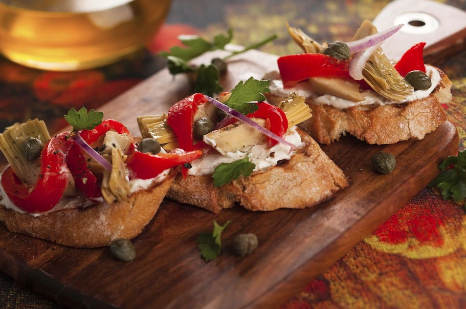

Не е тайна, че се придържа към принципите на правилното хранене-залог за добро здраве, благополучие, безупречна красота и, разбира се, идеална фигура, но съгласете се, много трудно е да се поддържа балансиран режим на хранене, когато на всеки ъгъл се крие изкушението под формата на различни заведения за бързо хранене, сладкарници, и най-ярките, атрактивни етикети на опаковки безполезни продукти.
Андалусия и нейната тайна за спасение от изтощителната топлина-гаспачо
През летните месеци в Южна Испания няма по-добър изход от топлината, отколкото добре Студената доматена супа гаспачо. В допълнение към домати се добавят краставици, лук, зехтин и чесън и се сервират, като правило, с тост и червен пипер. Според една от кулинарните легенди супата е изобретена от испански ловци на мулета, които винаги са имали под ръка предишни храни. Днес това традиционно испанско ястие е една от най-известните доматени супи в света.

Паеля-прочутото ястие на Валенсия
Днес в Испания можете да намерите много варианти на известната паеля, но във всеки случай нейната задължителна съставка ще бъде ориз. Традиционно селските жители на Испания правят паеля от храни, които са им на разположение, като добавят пиле, заек и зеленчуци, типични за Валенсия, като лимонов боб или захарен боб към ориза. Но през вековете рецептата за паеля е претърпяла редица промени, а днес в Испания е най-популярният ориз с морски дарове, например със скариди и сепии. Класическата паеля може да се опита на плажовете на Валенсия.

Теруел трохи-прост и с вкус
Не можете да посетите Теруел или да опитате трохите на Теруел. Приготвя се доста лесно: хлябът се нарязва, накисва се за един ден в подсолена вода и след това се запържва с масло и чесън, като се разбърква непрекъснато. Резултатът е много необичайно, вкусно и задоволително ястие от галета, нещо като кускус. За по-голям вкус към трохите можете да добавите парчета свинско месо, колбаси или дори грозде.

Каталонски патладжан с пипер-вкусна закуска
За да приготвите каталонски патладжан с червен пипер, зеленчуците се държат на открит огън или се пекат на скара, докато кората стане черна. След това покрийте с чиния и охладете, след което патладжаните и чушките се обелват и нарязват на ивици. Съвет: не се опитвайте да охлаждате зеленчуците със студена вода, тъй като те ще загубят сока си, давайки на ястието характерен вкус и аромат. На повечето места зеленчуците се сервират с препечен хляб, напоени с доматен сок и масло, аншоа и лук, а понякога и риба тон.
